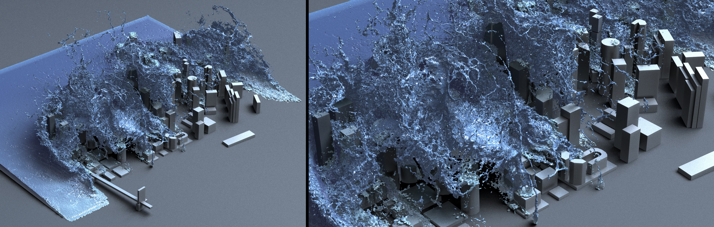

EUROGRAPHICS 2018
Fast Fluid Simulations with Sparse Volumes on the GPU
Kui Wu, Nghia Truong, Cem Yuksel, Rama Hoetzlein
City scene simulated with 29 million particles on a 512×256×512 grid with our spatially sparse, matrix-free FLIP solver on a Quadro GP100 GPU at an average 1.8 seconds/frame
Abstract
We introduce efficient, large scale fluid simulation on GPU hardware using the fluid-implicit particle (FLIP) method over a sparse hierarchy of grids represented in NVIDIA GVDB Voxels. Our approach handles tens of millions of particles within a virtually unbounded simulation domain. We describe novel techniques for parallel sparse grid hierarchy construction and fast incremental updates on the GPU for moving particles. In addition, our FLIP technique introduces sparse, work efficient parallel data gathering from particle to voxel, and a matrix-free GPU-based conjugate gradient solver optimized for sparse grids. Our results show that our method can achieve up to an order of magnitude faster simulations on the GPU as compared to FLIP simulations running on the CPU.

Simulation of an expanding, sparse domain with 2 million particles. The domain reaches up to 3360×160×2272, with the fluid fully simulated in the sparse bricks indicated in blue. Each brick is (2^5)^3 = 32768 voxels. Simulation takes 1 second per frame on a Quadro GP100, a lower efficiency than typical for 2M particles due to a higher ratio of unused voxels per brick.
Paper [Preprint] (PDF, 13Mb)
Code [GVDB 1.1]
Slides [PDF]
Citation [Bibtex]
Demo
Acknowledgements
The authors would like to specially thank Ken Museth (Weta Digital), Gergely Klar (Dreamworks Animation), and Tristan Lorach (NVIDIA) for their support and guidance. This work was supported in part by NSF grant #1538593.